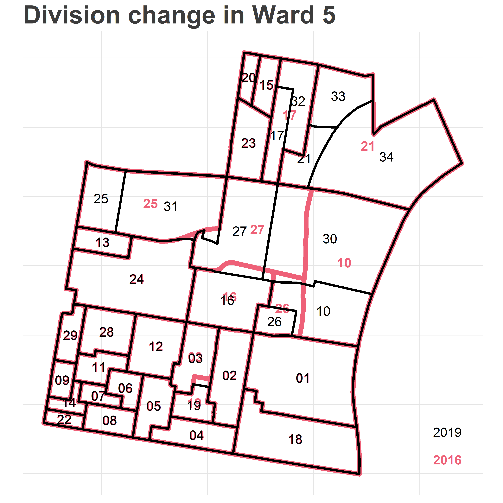
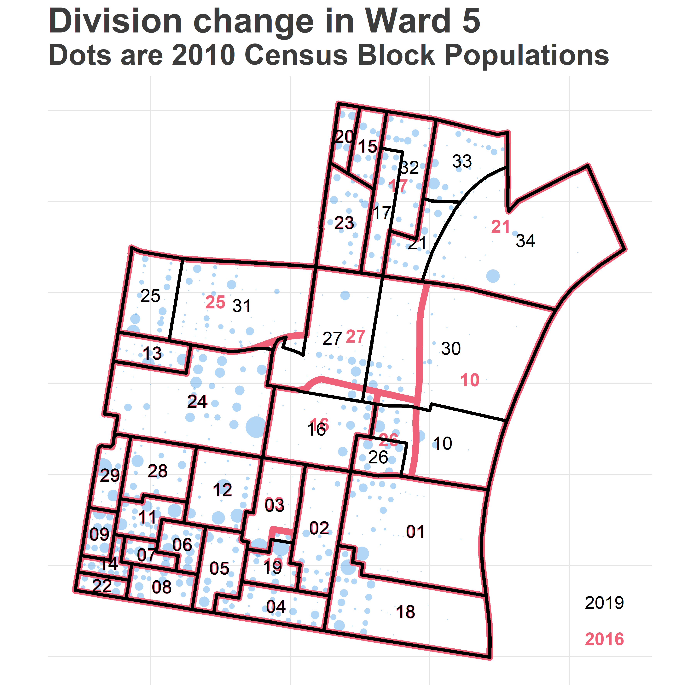

Philadelphia’s past election results are all released based on past division boundaries. In order to make good historical comparisons, it’s necessary to apportion these old results into the modern boundaries. This post is a tutorial on how I use R’s GIS packages to crosswalk old data to present-day boundaries.
Note: All of the data and resources are available at https://github.com/jtannen/crosswalk. Just want the final crosswalked election data? You can find it in the outputs folder.
For GIS in R, I use the sf package, which is a tidyverse-friendly mapping library.
What’s the challenge? Below is a map of the divisions in Philadelphia’s 5th Ward, using 2016 and 2019 boundaries.
library(sf)
library(dplyr)
library(tidyr)
library(ggplot2)
sixtysix_colors <- list(
red="#D0445E",
blue="#0077E0",
purple="#C92EC4",
green="#009871",
orange="#9C7200",
grey="#009871",
light_red="#EE6178"
)
theme_map_sixtysix <- function(){
ggthemes::theme_map() %+replace%
theme(
text = ggthemes::theme_fivethirtyeight()$text,
title = ggthemes::theme_fivethirtyeight()$plot.title,
panel.grid.major = element_line(color="grey90")
)
}
divs_16 <- st_read("data/division_shapefiles/2016/2016_Ward_Divisions.shp") %>%
rename(warddiv16 = WARD_DIVSN) %>%
mutate(
DIVSN = sprintf("%02d", DIVSN),
WARD = sprintf("%02d", WARD)
) %>%
st_transform(4326)## Reading layer `2016_Ward_Divisions' from data source `C:\Users\Jonathan Tannen\Dropbox\sixty_six\posts\crosswalk_tutorial\data\division_shapefiles\2016\2016_Ward_Divisions.shp' using driver `ESRI Shapefile'
## Simple feature collection with 1686 features and 5 fields
## geometry type: POLYGON
## dimension: XY
## bbox: xmin: 2660575 ymin: 204817.1 xmax: 2750115 ymax: 304942.4
## epsg (SRID): NA
## proj4string: +proj=lcc +lat_1=39.93333333333333 +lat_2=40.96666666666667 +lat_0=39.33333333333334 +lon_0=-77.75 +x_0=600000 +y_0=0 +datum=NAD83 +units=us-ft +no_defsdivs_19 <- st_read("data/division_shapefiles/2019/Political_Divisions.shp") %>%
rename(warddiv19 = DIVISION_N) %>%
mutate(WARD = substr(warddiv19, 1, 2))%>%
st_transform(4326)## Reading layer `Political_Divisions' from data source `C:\Users\Jonathan Tannen\Dropbox\sixty_six\posts\crosswalk_tutorial\data\division_shapefiles\2019\Political_Divisions.shp' using driver `ESRI Shapefile'
## Simple feature collection with 1692 features and 5 fields
## geometry type: POLYGON
## dimension: XY
## bbox: xmin: -75.28031 ymin: 39.86748 xmax: -74.95574 ymax: 40.13793
## epsg (SRID): 4326
## proj4string: +proj=longlat +datum=WGS84 +no_defsggplot(
divs_16 %>% filter(WARD == "05")
) +
geom_sf(
color = sixtysix_colors$light_red,
size=2,
fill=NA
) +
geom_text(
aes(x=X, y=Y, label = DIVSN),
data = with(
divs_16 %>% filter(WARD == "05"),
data.frame(DIVSN, st_centroid(geometry) %>% st_coordinates())
),
color=sixtysix_colors$light_red,
size=4,
fontface="bold"
) +
geom_sf(
data=divs_19 %>% filter(WARD == "05"),
color = "black",
size=1,
fill=NA
) +
geom_text(
aes(x=X, y=Y, label = SHORT_DIV_),
data = with(
divs_19 %>% filter(WARD == "05"),
data.frame(SHORT_DIV_, st_centroid(geometry) %>% st_coordinates())
),
color="black",
size=4
) +
geom_text(
aes(label=year, x=x, y=y, fontface=fontface, color=color),
data=tribble(
~year, ~x, ~y, ~fontface, ~color,
2016, -75.12607, 39.941, "bold", sixtysix_colors$light_red,
2019, -75.12607, 39.943, "plain", "black"
),
hjust=1
) +
scale_color_identity(guide=FALSE) +
theme_map_sixtysix() +
ggtitle("Division change in Ward 5")
Notice that many of the boundaries changed. Five divisions were added: 05-30 through 05-34. Division 05-03 expanded down into 05-19. Division 05-26 shrank. If we were to naively compare 2016 and 2019 results by division id, we see that 05-21’s votes nosedived, while 05-34 went from 0 votes (it was non-existent) to a huge number. What we need to do instead is apportion the votes from the old boundaries to the new ones.
The challenge is that we don’t have the right data to perfectly make that decision. Look at 2016’s 05-21. It gets divided into 05-21, 05-33, and 05-34. Should we divide its votes evenly among the three? Should we apportion it based on the area of each division? By population?
A simple, common technique is to apportion values by area. We can calculate the area of each intersection, and give 2016’s votes to 2019 boundaries proportional to how much of its area lies in each (this is called “areal weighting”). We’ll reproject them to EPSG:2272 (the PA South State Plane) to get the most accurate areas:
areal_weights <- st_intersection(
st_transform(divs_16, 2272),
st_transform(divs_19, 2272)
) %>%
mutate(area = st_area(geometry)) %>%
as.data.frame() %>%
select(warddiv16, warddiv19, area) %>%
group_by(warddiv16) %>%
mutate(prop_of_16 = as.numeric(area / sum(area)))
areal_weights %>%
filter(warddiv16 == "0521")## # A tibble: 5 x 4
## # Groups: warddiv16 [1]
## warddiv16 warddiv19 area prop_of_16
## <fctr> <fctr> <S3: units> <dbl>
## 1 0521 1802 712.1734 US_survey_foot^2 6.830801e-05
## 2 0521 0530 9891.1043 US_survey_foot^2 9.487038e-04
## 3 0521 0534 7279215.1422 US_survey_foot^2 6.981848e-01
## 4 0521 0533 1929128.9079 US_survey_foot^2 1.850321e-01
## 5 0521 0521 1206966.6049 US_survey_foot^2 1.157660e-01The above shows us that Division 05-21 in 2016 was split up into five divisions for 2019. Two of them–18-02 and 05-30–look like noise; the areas are tiny and probably represent a trivial move in the boundary.
To apportion 2016’s votes to 2019 boundaries, we would give new division 05-34 69.8% of the votes, 05-33 18.5%, and 05-21 11.6%. Done.
Exercise: What assumptions make this apportionment valid? (answer in appendix)
I usually do one better than areal weighting: population weighting. Instead of calculating the area of the intersection, I calculate the population living in each intersection. We then apportion 2016 counts proportionally to the population in each boundary. For example, 2019’s 05-34 lies along the Delaware River, and includes a vast industrial region. It probably represents many fewer votes than its area would suggest. Instead of using the area of each population, we could use the population.
We need fine-scale data to make this calculation. Luckily, the Census provides us with block-level populations every ten years.
phila_blocks <- st_read("data/census_blocks/tl_2010_42101_tabblock10.shp") %>%
st_transform(4326)## Reading layer `tl_2010_42101_tabblock10' from data source `C:\Users\Jonathan Tannen\Dropbox\sixty_six\posts\crosswalk_tutorial\data\census_blocks\tl_2010_42101_tabblock10.shp' using driver `ESRI Shapefile'
## Simple feature collection with 18872 features and 15 fields
## geometry type: MULTIPOLYGON
## dimension: XY
## bbox: xmin: -75.28027 ymin: 39.867 xmax: -74.95576 ymax: 40.13799
## epsg (SRID): 4269
## proj4string: +proj=longlat +datum=NAD83 +no_defs## We'll only deal with centroids, since blocks are contained within divisions
phila_blocks <- st_centroid(phila_blocks)
phila_block_pops <- read.csv(
"data/census_blocks/phila_block_pops.csv",
colClasses=c("character","numeric")
)
phila_blocks <- left_join(phila_blocks, phila_block_pops)Here are the 2010 populations of the Census Blocks of the area.
ward_05_blocks <- sapply(
phila_blocks %>% st_within(divs_19 %>% filter(WARD == "05")),
length
) == 1
ward_05_blocks <- phila_blocks[ward_05_blocks,] %>%
mutate(x = st_coordinates(geometry)[,1],
y = st_coordinates(geometry)[,2])
ggplot(
divs_16 %>% filter(WARD == "05")
) +
geom_point(
data = ward_05_blocks,
aes(x=x,y=y,size = pop10),
alpha = 0.3,
pch = 16,
color=sixtysix_colors$blue
) +
scale_size_area(guide=FALSE) +
expand_limits(size=0) +
geom_sf(
color = sixtysix_colors$light_red,
size=2,
fill=NA
) +
geom_text(
aes(x=X, y=Y, label = DIVSN),
data = with(
divs_16 %>% filter(WARD == "05"),
data.frame(DIVSN, st_centroid(geometry) %>% st_coordinates())
),
color=sixtysix_colors$light_red,
size=4,
fontface="bold"
) +
geom_sf(
data=divs_19 %>% filter(WARD == "05"),
color = "black",
size=1,
fill=NA
) +
geom_text(
aes(x=X, y=Y, label = SHORT_DIV_),
data = with(
divs_19 %>% filter(WARD == "05"),
data.frame(SHORT_DIV_, st_centroid(geometry) %>% st_coordinates())
),
color="black",
size=4
) +
geom_text(
aes(label=year, x=x, y=y, fontface=fontface, color=color),
data=tribble(
~year, ~x, ~y, ~fontface, ~color,
2016, -75.12607, 39.941, "bold", sixtysix_colors$light_red,
2019, -75.12607, 39.943, "plain", "black"
),
hjust=1
) +
scale_color_identity(guide=FALSE) +
theme_map_sixtysix() +
ggtitle("Division change in Ward 5", "Dots are 2010 Census Block Populations") The goal is simple: to add up the blue dots inside of each intersection, and apportion votes that way.
get_pop_of_geoms <- function(g, idcol, blocks=phila_blocks){
if(st_crs(g) != st_crs(blocks)) stop("g and blocks must have same crs.")
intersection <- st_intersects(blocks, g)
nmatch <- sapply(intersection, length)
if(sum(blocks$pop10[nmatch==0]) > 0) stop("blocks weren't matched; population was lost.")
if(any(nmatch > 1)) stop("blocks matched to multiple geometries. This shouldn't happen.")
matches <- data.frame(
blocki = (1:length(nmatch))[nmatch == 1],
gi = unlist(intersection)
) %>% mutate(
block_id = blocks$GEOID10[blocki],
g_id = g[[idcol]][gi]
) %>%
left_join(
blocks %>% as.data.frame %>% select(pop10, GEOID10),
by = c("block_id"="GEOID10")
) %>%
group_by(g_id) %>%
summarise(pop10 = sum(pop10))
if(sum(matches$pop10) != sum(blocks$pop10)) stop("Population was lost/added. Something's wrong.")
names(matches)[1] <- idcol
return(matches)
}
get_crosswalk <- function(g1, g2, idcol1, idcol2, blocks=phila_blocks){
if(st_crs(g1) != st_crs(g2)) stop("g1 and g2 must have same crs.")
g1$id1 <- g1[[idcol1]]
g2$id2 <- g2[[idcol2]]
intersection <- st_intersection(g1, g2)
intersection <- intersection %>%
mutate(id1_id2 = paste(id1, id2, sep="_")) %>%
select(id1_id2, geometry)
pop_of_intersection <- get_pop_of_geoms(intersection, "id1_id2", blocks)
crosswalk <- pop_of_intersection %>%
separate(id1_id2, c("id1", "id2"), sep = "_") %>%
group_by(id1, id2) %>%
summarise(pop10 = sum(pop10)) %>%
group_by(id1) %>%
mutate(frac_of_g1 = {if(sum(pop10) > 0) pop10/sum(pop10) else 1/n()}) %>%
group_by(id2) %>%
mutate(frac_of_g2 = {if(sum(pop10) > 0) pop10/sum(pop10) else 1/n()}) %>%
group_by()
names(crosswalk)[1:2] <- c(idcol1, idcol2)
return(crosswalk)
}
crosswalk_16_19 <- get_crosswalk(divs_16, divs_19, "warddiv16", "warddiv19")
head(crosswalk_16_19)## # A tibble: 6 x 5
## warddiv16 warddiv19 pop10 frac_of_g1 frac_of_g2
## <chr> <chr> <dbl> <dbl> <dbl>
## 1 0101 0101 878 1 1
## 2 0102 0102 834 1 1
## 3 0103 0103 759 1 1
## 4 0104 0104 1006 1 1
## 5 0105 0105 807 1 1
## 6 0106 0106 762 1 1What happened to 05-10 and 05-21, above?
crosswalk_16_19 %>%
filter(warddiv16 %in% c("0521", "0510"))## # A tibble: 5 x 5
## warddiv16 warddiv19 pop10 frac_of_g1 frac_of_g2
## <chr> <chr> <dbl> <dbl> <dbl>
## 1 0510 0510 390 0.8405172 0.4016478
## 2 0510 0530 74 0.1594828 0.1223140
## 3 0521 0521 716 0.3308688 1.0000000
## 4 0521 0533 936 0.4325323 1.0000000
## 5 0521 0534 512 0.2365989 1.0000000The crosswalk says that 05-21 was split into 05-21, 33, and 34, in proportions of 0.33, 0.43, and 0.24. Notice that crosswalking back, it says that all of 2019’s 05-33 is contained in 2016’s 05-21, which is correct (frac_of_g2 = 1.0).
It says that 2019’s 05-30 is only 0.12 within 2016’s 05-10. Most of its population actually comes from that region to the West, which is smaller in area.
Exercise 2: What is the assumption(s) in using population-based weighting?
Finally, let’s crosswalk the raw data from 2016 forward to 2019 divisions. The folder data/raw_votes contains csv files of Philadelphia elections as downloaded directly from www.philadelphiavotes.com.
general_16 <- read.csv("data/raw_votes/2016_general.csv") %>%
mutate(warddiv16 = paste0(sprintf("%02d", WARD), sprintf("%02d", DIVISION)))
head(general_16)## WARD DIVISION TYPE OFFICE CANDIDATE PARTY VOTES
## 1 1 1 A ATTORNEY GENERAL Write In 0
## 2 1 1 A ATTORNEY GENERAL JOHN RAFFERTY REPUBLICAN 1
## 3 1 1 A ATTORNEY GENERAL JOSH SHAPIRO DEMOCRATIC 6
## 4 1 1 A AUDITOR GENERAL Write In 0
## 5 1 1 A AUDITOR GENERAL EUGENE A DEPASQUALE DEMOCRATIC 5
## 6 1 1 A AUDITOR GENERAL JOHN BROWN REPUBLICAN 0
## warddiv16
## 1 0101
## 2 0101
## 3 0101
## 4 0101
## 5 0101
## 6 0101To crosswalk, we will apportion each 2016 division’s votes to 2019 boundaries proportional to the 2016 fraction of population.
general_16_crosswalked <- general_16 %>%
left_join(crosswalk_16_19, by = "warddiv16") %>%
group_by(TYPE, OFFICE, CANDIDATE, PARTY, warddiv19) %>%
summarise(VOTES = sum(VOTES * frac_of_g1))
head(general_16_crosswalked)## # A tibble: 6 x 6
## # Groups: TYPE, OFFICE, CANDIDATE, PARTY [1]
## TYPE OFFICE CANDIDATE PARTY warddiv19 VOTES
## <fctr> <fctr> <fctr> <fctr> <chr> <dbl>
## 1 A ATTORNEY GENERAL JOHN RAFFERTY REPUBLICAN 0101 1
## 2 A ATTORNEY GENERAL JOHN RAFFERTY REPUBLICAN 0102 1
## 3 A ATTORNEY GENERAL JOHN RAFFERTY REPUBLICAN 0103 3
## 4 A ATTORNEY GENERAL JOHN RAFFERTY REPUBLICAN 0104 5
## 5 A ATTORNEY GENERAL JOHN RAFFERTY REPUBLICAN 0105 2
## 6 A ATTORNEY GENERAL JOHN RAFFERTY REPUBLICAN 0106 0We’re done! We have 2016’s results in 2019 boundaries.
Note: We could probably do even one better, and geocode the addresses of where people actually voted, using data from the voter file for each year. Maybe I’ll get around to that one day…
Just for finality, let’s loop through all years and store the outputs. Sounds easy, but… oof.
I’ve only been able to find shapefiles for divisions from a handful of years. The amazing folks at Azavea and the Commissioners’ Office have put together a batch of historical division boundaries, but even their herculean efforts don’t perfectly cover all recent elections. I’ve only got boundaries for 2005, 2008-2013, 2016, and 2019. For each election, I’ve chosen the boundaries that appear to fit best based on divisions being created or destroyed, but I can’t know how pesty boundary changes might affect these numbers.
Note: Have more complete division boundaries? Want to be a hero and create them from the text description of boundaries? Let me know!
crosswalk_years <- list.dirs("data/division_shapefiles", full.names = F)
for(crosswalk_year in crosswalk_years[!crosswalk_years %in% c("", "2019")]){
crosswalk_year2 <- substr(crosswalk_year, 3, 4)
div_dir <- sprintf("data/division_shapefiles/%s", crosswalk_year)
div_path <- list.files(div_dir, pattern = ".*\\.shp$", full.names = TRUE)
g1 <- st_read(div_path) %>%
mutate(warddiv = paste0(sprintf("%02d", WARD), sprintf("%02d", DIVSN))) %>%
st_transform(4326)
idcol <- paste0("warddiv", crosswalk_year2)
names(g1)[names(g1) == "warddiv"] <- idcol
crosswalk <- get_crosswalk(g1, divs_19, idcol, "warddiv19")
write.csv(
crosswalk,
file=paste0("outputs/", "crosswalk_", crosswalk_year2, "_to_19.csv"),
row.names = FALSE
)
}## Reading layer `2005_Ward_Divisions' from data source `C:\Users\Jonathan Tannen\Dropbox\sixty_six\posts\crosswalk_tutorial\data\division_shapefiles\2005\2005_Ward_Divisions.shp' using driver `ESRI Shapefile'
## Simple feature collection with 1683 features and 5 fields
## geometry type: POLYGON
## dimension: XY
## bbox: xmin: 2660575 ymin: 204817.1 xmax: 2750115 ymax: 304942.4
## epsg (SRID): NA
## proj4string: +proj=lcc +lat_1=39.93333333333333 +lat_2=40.96666666666667 +lat_0=39.33333333333334 +lon_0=-77.75 +x_0=600000 +y_0=0 +datum=NAD83 +units=us-ft +no_defs
## Reading layer `2008_12_Ward_Divisions' from data source `C:\Users\Jonathan Tannen\Dropbox\sixty_six\posts\crosswalk_tutorial\data\division_shapefiles\2008\2008_12_Ward_Divisions.shp' using driver `ESRI Shapefile'
## Simple feature collection with 1683 features and 5 fields
## geometry type: POLYGON
## dimension: XY
## bbox: xmin: 2660575 ymin: 204817.1 xmax: 2750115 ymax: 304942.4
## epsg (SRID): NA
## proj4string: +proj=lcc +lat_1=39.93333333333333 +lat_2=40.96666666666667 +lat_0=39.33333333333334 +lon_0=-77.75 +x_0=600000 +y_0=0 +datum=NAD83 +units=us-ft +no_defs
## Reading layer `2009_Ward_Divisions' from data source `C:\Users\Jonathan Tannen\Dropbox\sixty_six\posts\crosswalk_tutorial\data\division_shapefiles\2009\2009_Ward_Divisions.shp' using driver `ESRI Shapefile'
## Simple feature collection with 1684 features and 5 fields
## geometry type: MULTIPOLYGON
## dimension: XY
## bbox: xmin: 2660575 ymin: 204651 xmax: 2750115 ymax: 304942.4
## epsg (SRID): NA
## proj4string: +proj=lcc +lat_1=39.93333333333333 +lat_2=40.96666666666667 +lat_0=39.33333333333334 +lon_0=-77.75 +x_0=600000 +y_0=0 +datum=NAD83 +units=us-ft +no_defs
## Reading layer `2010_Ward_Divisions' from data source `C:\Users\Jonathan Tannen\Dropbox\sixty_six\posts\crosswalk_tutorial\data\division_shapefiles\2010\2010_Ward_Divisions.shp' using driver `ESRI Shapefile'
## Simple feature collection with 1684 features and 5 fields
## geometry type: MULTIPOLYGON
## dimension: XY
## bbox: xmin: 2660575 ymin: 204817.1 xmax: 2750115 ymax: 304942.4
## epsg (SRID): NA
## proj4string: +proj=lcc +lat_1=39.93333333333333 +lat_2=40.96666666666667 +lat_0=39.33333333333334 +lon_0=-77.75 +x_0=600000 +y_0=0 +datum=NAD83 +units=us-ft +no_defs
## Reading layer `2011_Ward_Divisions' from data source `C:\Users\Jonathan Tannen\Dropbox\sixty_six\posts\crosswalk_tutorial\data\division_shapefiles\2011\2011_Ward_Divisions.shp' using driver `ESRI Shapefile'
## Simple feature collection with 1687 features and 5 fields
## geometry type: POLYGON
## dimension: XY
## bbox: xmin: 2660575 ymin: 204817.1 xmax: 2750115 ymax: 304942.4
## epsg (SRID): NA
## proj4string: +proj=lcc +lat_1=39.93333333333333 +lat_2=40.96666666666667 +lat_0=39.33333333333334 +lon_0=-77.75 +x_0=600000 +y_0=0 +datum=NAD83 +units=us-ft +no_defs
## Reading layer `2012_09_Ward_Divisions' from data source `C:\Users\Jonathan Tannen\Dropbox\sixty_six\posts\crosswalk_tutorial\data\division_shapefiles\2012\2012_09_Ward_Divisions.shp' using driver `ESRI Shapefile'
## Simple feature collection with 1687 features and 5 fields
## geometry type: POLYGON
## dimension: XY
## bbox: xmin: 2660575 ymin: 204817.1 xmax: 2750115 ymax: 304942.4
## epsg (SRID): NA
## proj4string: +proj=lcc +lat_1=39.93333333333333 +lat_2=40.96666666666667 +lat_0=39.33333333333334 +lon_0=-77.75 +x_0=600000 +y_0=0 +datum=NAD83 +units=us-ft +no_defs
## Reading layer `2013_02_Ward_Divisions' from data source `C:\Users\Jonathan Tannen\Dropbox\sixty_six\posts\crosswalk_tutorial\data\division_shapefiles\2013\2013_02_Ward_Divisions.shp' using driver `ESRI Shapefile'
## Simple feature collection with 1687 features and 5 fields
## geometry type: POLYGON
## dimension: XY
## bbox: xmin: 2660575 ymin: 204817.1 xmax: 2750115 ymax: 304942.4
## epsg (SRID): NA
## proj4string: +proj=lcc +lat_1=39.93333333333333 +lat_2=40.96666666666667 +lat_0=39.33333333333334 +lon_0=-77.75 +x_0=600000 +y_0=0 +datum=NAD83 +units=us-ft +no_defs
## Reading layer `2016_Ward_Divisions' from data source `C:\Users\Jonathan Tannen\Dropbox\sixty_six\posts\crosswalk_tutorial\data\division_shapefiles\2016\2016_Ward_Divisions.shp' using driver `ESRI Shapefile'
## Simple feature collection with 1686 features and 5 fields
## geometry type: POLYGON
## dimension: XY
## bbox: xmin: 2660575 ymin: 204817.1 xmax: 2750115 ymax: 304942.4
## epsg (SRID): NA
## proj4string: +proj=lcc +lat_1=39.93333333333333 +lat_2=40.96666666666667 +lat_0=39.33333333333334 +lon_0=-77.75 +x_0=600000 +y_0=0 +datum=NAD83 +units=us-ft +no_defsuse_crosswalk <- tribble(
~year, ~election, ~crosswalk_year,
2002, "primary", 2005,
2002, "general", 2005,
2003, "primary", 2005,
2003, "general", 2005,
2004, "primary", 2005,
2004, "general", 2005,
2005, "primary", 2005,
2005, "general", 2005,
2006, "primary", 2005,
2006, "general", 2005,
2007, "primary", 2005,
2007, "general", 2005,
2008, "primary", 2008,
2008, "general", 2008,
2009, "primary", 2008, # broken
2009, "general", 2008, # broken
2010, "primary", 2009,
2010, "general", 2011,
2011, "primary", 2011,
2011, "general", 2011,
2012, "primary", 2011,
2012, "general", 2012,
2013, "primary", 2013,
2013, "general", 2013,
2014, "primary", 2016,
2014, "general", 2016,
2015, "primary", 2016,
2015, "general", 2016,
2016, "primary", 2016,
2016, "general", 2016,
2017, "primary", 2016,
2017, "general", 2016,
2018, "primary", 2019,
2018, "general", 2019
)
fix_colnames <- function(df){
## 2018 general results changed all the column names...
replace_name <- function(df, oldname, newname){
names(df)[names(df) == oldname] <- newname
return(df)
}
df <- df %>%
replace_name("CATEGORY", "OFFICE") %>%
replace_name("SELECTION", "CANDIDATE") %>%
replace_name("VOTE.COUNT", "VOTES")
return(df)
}
ALLOW_MISTAKES <- TRUE
VERBOSE <- FALSE
elections_with_mistakes <- data.frame()
for(i in 1:nrow(use_crosswalk)){
if(VERBOSE) print(use_crosswalk[i,])
year <- use_crosswalk$year[i]
election <- use_crosswalk$election[i]
crosswalk_year <- use_crosswalk$crosswalk_year[i]
election_df <- read.csv(sprintf("data/raw_votes/%s_%s.csv", year, election))
election_df <- fix_colnames(election_df)
election_df <- election_df %>%
mutate(warddiv = paste0(sprintf("%02d", WARD), sprintf("%02d", DIVISION)))
if(crosswalk_year == "2019"){
election_df_19 <- election_df %>% rename(warddiv19 = warddiv)
missing_g1 <- unique(election_df$warddiv)[!(unique(election_df$warddiv) %in% divs_19$warddiv19)]
missing_g2 <- divs_19$warddiv19[!(divs_19$warddiv19 %in% unique(election_df$warddiv))]
} else {
idcol <- paste0("warddiv", substr(crosswalk_year, 3, 4))
crosswalk <- read.csv(
sprintf("outputs/crosswalk_%s_to_19.csv", substr(crosswalk_year, 3, 4)),
colClasses = c(rep("character", 2), rep("numeric", 3))
)
election_df_19 <- election_df %>%
left_join(crosswalk, by=c("warddiv"=idcol)) %>%
group_by(TYPE, OFFICE, CANDIDATE, PARTY, warddiv19) %>%
summarise(VOTES = sum(VOTES * frac_of_g1))
missing_g1 <- unique(election_df$warddiv)[!(unique(election_df$warddiv) %in% unique(crosswalk[,idcol]))]
missing_g2 <- unique(crosswalk[,idcol])[!(unique(crosswalk[,idcol]) %in% unique(election_df$warddiv))]
}
if(length(missing_g1) > 0 || length(missing_g2) > 0){
if(!ALLOW_MISTAKES) stop("Votes mismatch. Something went wrong.")
elections_with_mistakes <- bind_rows(
elections_with_mistakes,
data.frame(
year=year,
election=election,
lost_votes=sum(election_df$VOTES) - sum(election_df_19$VOTES),
total_votes = sum(election_df$VOTES),
g1_missing_from_crosswalk=paste(missing_g1, collapse=","),
crosswalk_missing_from_g1=paste(missing_g2, collapse=",")
)
)
}
write.csv(
election_df_19,
file=sprintf("outputs/%s_%s_crosswalked_to_19.csv", year, election),
row.names=FALSE
)
}
print(elections_with_mistakes)## year election lost_votes total_votes g1_missing_from_crosswalk
## 1 2009 primary 0 1564872
## 2 2009 general 0 1816570
## 3 2018 primary 0 1305757
## crosswalk_missing_from_g1
## 1 4923,4924,4925
## 2 4923,4924,4925
## 3 1818,0532,0534,0533Notice above the three elections with flagged mistakes. For the 2009 results, the 2008 crosswalk that I used was expecting three divisions that weren’t actually in the 2009 results. This is a problem; it means that I over-apportioned those votes somewhere else. The boundaries for 2009 aren’t any better, six divisions are missing. This isn’t the end of the world, three out of 1,681 divisions isn’t terrible. And the ward-level results will still be right. But don’t trust the division-level results for the 49th ward in 2009.
Similarly, the 2018 primary had two divisions that weren’t in the 2016 map, 05-30 and 05-31, but was missing four divisions that were used in the general: 18-18, 05-32, 05-33, and 05-34. I’ve used the 2019 boundaries, to avoid losing votes. Instead, 18-18 et al will be assumed to have 0 votes (which isn’t great either).
The fact that only these three elections are flagged isn’t dispositive proof that the other crosswalks were perfect: the boundaries could have moved without creating or removing division numbers, which is all that we’re checking.
I’ll keep looking for shapefiles, and will update the repo as I find them, but for the time being this is probably the best we can do.
We’ve created our crosswalks.
You can download the resulting data from the outputs folder.
You may be uncomfortable with the simplicity of the assumptions above. This method usually does a darn good job of getting sensible data, but you might imagine some extensions: - Using annual voter file weights instead of Decennial Census populations. - A model-based Bayesian approach that uses similarities in voting patterns across years to guess which votes came from where. You could additionally use race and income data, which is released by the census at the Block level. These methods risk the Ecological Fallacy, but not in a worse way than what we’re already doing.
What assumptions make the areal apportionment valid? It assumes that the value was spread uniformly in space in the original boundaries. For example, apportioning 2016 votes to 2019 boundaries using areal weighting assumes that the votes per mile in 2016 was evenly spread within each division (although it will obviously be different for different divisions).
What assumptions make the population apportionment valid? It assumes that the population is concentrated at the centroid of the block or that the blocks are entirely contained within one division (since we only use the centroids) and that the 2010 population is proportional to the target metric. The first is true in our case: divisions don’t split blocks, so blocks are entirely contained in divisions. The second is wrong, but much less wrong than the areal assumption: votes are more proportional to population than they are to area. We could make this better by using the correct year’s population if we had it, or using voting-age population or registered voters instead of census population, but this does a pretty darn good job.